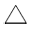
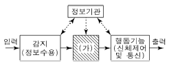
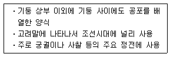
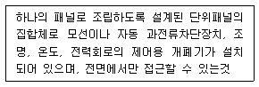

실내건축기사(구) (2014-05-25 기출문제)
1과목: 실내디자인론
1. 공간의 분할 방법은 차단적 구획, 심리 ㆍ 도덕적 구획, 지각적 구획으로 구분할 수 있다. 다음 중 지각적 구획에 속하는 것은?
- 커튼의 사용
- 마감재료의 변화
- 천장면의 높이 변화
- 바닥면의 높이 변화
(정답률: 54%)

2. 창문 전체를 커튼으로 처리하지 않고 반 정도만 친 형태를 갖는 커튼의 종류는?
- 새시 커튼
- 글라스 커튼
- 드로우 커튼
- 드레퍼리 커튼
(정답률: 84%)
3. 한국의 전통가구 중 반닫이에 관한 설명으로 옳지 않은 것은?
- 반닫이는 우리나라 전역에 걸쳐서 사용되었다.
- 전면 상반부를 문짝으로 만들어 상하로 여는 가구이다.
- 받닫이는 주로 양반층에서 장이나 농 대신에 사용하던 가구이다
- 반닫이 안에는 의복, 책, 제기 등을 보관하였고, 위에는 이불을 얹거나 항아리, 소품 등을 얹어 두었다.
(정답률: 75%)
4. 고대 그리스 신전 건축에서 사용된 착시 보정 방법으로 옳지 않은 것은?
- 모서리 쪽의 기둥 간격을 넓혔다.
- 기둥의 전체적인 윤곽을 중앙부에서 약간 부풀게 만들었다.
- 기둥 같은 수직부재들은 올라가면서 약간 안쪽으로 기울였다.
- 기단, 아키트레이브, 코니스들이 이루는 긴 수평선들은 약간 위로 불룩하게 만들었다.
(정답률: 46%)
5. 다음 중 기능분석 내용을 바탕으로 하여 구성요소의 배치(lay-out)를 행할 때 고려해야 할 내용과 가장 거리가 먼 것은?
- 공간 상호간의 연계성
- 색채 및 재료의 유사성
- 출입형식 및 동선체계
- 인체공학적 치수와 가구 크기
(정답률: 86%)
6. 건축화조명 중 코브(cove) 조명에 관한 설명으로 옳은 것은?
- 광원을 넓은 면적의 벽면에 매입하여 비스타(vista)적인 효과를 낼 수 있다.
- 벽면의 상부에 위치하여 모든 빛이 아래로 직사하도록 하는 직접조명방식이다.
- 천장, 벽의 구조체에 의해 광원의 빛이 천장 또는 벽면으로 가려지게 하여 반사광으로 간접 조명하는 방식이다.
- 건축구조체로 천장에 조명기구를 설치하고 그 밑에 루버나 유리, 플라스틱 같은 확산 투과판으로 천장을 마감처리하여 설치하는 조명방식이다.
(정답률: 80%)
7. 상품의 유효진열범위로서 골든 스페이스(golden space)라고 불리는 높이는?
- 300∼750mm
- 600∼900mm
- 850∼1250mm
- 900∼1400mm
(정답률: 90%)
8. 실내공간의 형태에 관한 설명으로 옳지 않은 것은?
- 원형의 공간은 내부로 향한 집중감을 주어 중심이 더욱 강조된다.
- 정방형의 공간은 조용하고 정적인 반면, 딱딱하고 형식적인 느낌을 준다.
- 천장이 모아진 삼각형의 공간은 방향성의 중립을 유지하여 긴장감이 없다.
- 장방형의 공간에서 길이가 폭의 두 배를 넘게 되면 공간의 사용과 가구배치가 자유롭지 못하게 된다.
(정답률: 80%)
9. 상업공간의 설계 시 고려되는 고객의 구매심리(AIDMA)에 속하지 않는 것은?
- Attention
- Interest
- Design
- Memory
(정답률: 73%)
10. 휴먼 스케일에 관한 설명으로 옳지 않은 것은?
- 인간의 신체를 기준으로 파악되고 측정되는 척도 기준이다.
- 휴먼 스케일은 기념비적 건축물에 주로 적용되며, 엄숙, 경건한 공간을 형성한다.
- 휴먼 스케일의 적용은 추상적, 상징적이 아닌 기능적인 척도를 추구하는 것이다.
- 휴먼 스케일이 잘 적용된 실내공간은 심리적, 시각적으로 안정되고 편안한 느낌을 준다.
(정답률: 84%)
11. 상점의 진열대 배치형식 중 직렬배치형에 관한 설명으로 옳은 것은?
- 고객의 이동 흐름이 늦다는 단점이 있다.
- 고객의 통행량에 따라 부분적으로 통로 폭을 조절하기 어렵다.
- 진열대 등의 배치와 고객의 동선을 굴절 또는 곡선형으로 구성시킨 형식이다.
- 주통로 다음의 제2통로를 주통로에 대해 45°가 이루어지도록 진열대를 배치한 형식이다.
(정답률: 74%)
12. 조화에 관한 설명으로 옳은 것은?
- 단순조화는 대체적으로 온화하며 부드럽고 안정감이 있다.
- 유사조화는 통일보다 대비에 더 치우쳐 있다고 볼 수있다.
- 단순조화는 다양한 주제와 이미지들이 요구될 때 주로 사용하는 방식이다.
- 대비조화는 형식적, 외형적으로 시각적인 동일 요소의 조합을 통하여 주로 성립된다.
(정답률: 83%)
13. 균형(Balance)의 원리에 관한 설명으로 옳지 않은 것은?
- 크기가 큰 것은 작은 것보다 시각적 중량감이 크다.
- 밝은 색상이 어두운 색상보다 시각적 중량감이 크다.
- 거친 질감은 부드러운 질감보다 시각적 중량감이 크다.
- 불규칙적인 형태는 기하학적인 형태보다 시각적 중량감이 크다.
(정답률: 82%)
14. 형태의 지각심리 중 불완전한 형이나 그룹을 완전한 하나의 형 혹은 그룹으로 완성하여 지각한다는 법칙을 의미하는 것은?
- 근접성
- 폐쇄성
- 유사성
- 연속성
(정답률: 83%)
15. VMD(visual merchandising)의 구성에 속하지 않는 것은?
- IP
- PP
- VP
- POP
(정답률: 85%)
16. 실내 디자인의 목표에 대한 설명 중 틀린 것은?
- 인간에게 적합한 환경을 추구한다.
- 인간의 편리성을 위해 좌식의 실내디자인을 추구한다.
- 인간을 존중하고 인간생활환경의 질을 향상시킨다.
- 인간의 생활 기능(작업, 휴식, 취침, 취식)을 충족시킨다.
(정답률: 89%)
17. 은행의 실내계획에 관한 설명으로 옳지 않은 것은?
- 은행의 고유의 색채, 심볼마크 등을 실내에 도입하여 이미지를 부각시킨다.
- 객장은 대기공간으로 고객에게 안전하고 편리한 서비스를 제공하는 시설을 구비하도록 한다.
- 영업장과 객장의 효율적 배치로 사무 동선을 단순화하여 업무가 신속히 처리되도록 한다.
- 도난방지를 위해 고객에게 심리적 긴장감을 주도록 영업장과 객장은 시각적으로 차단시킨다.
(정답률: 87%)
18. 전시공간의 순회 유형 중 연속순회형식에 관한 설명으로 옳지 않은 것은?
- 전시 벽면이 최대화되고 공간 절약 효과가 있다.
- 관람객은 연속적으로 이어진 동선을 따라 관람하게 된다.
- 비교적 동선이 단순하나 다소 지루하고 피곤한 느낌을 줄 수 있다.
- 전시 규모 등 필요에 따라 독립적으로 전시실을 폐쇄시킬 수 있다.
(정답률: 81%)
19. 디자인 요소로서 선에 관한 설명으로 옳지 않은 것은?
- 어떤 형상을 규정하거나 한정하고 면적을 분할한다.
- 점이 이동한 궤적이며 면의 한계, 교차에서 나타난다.
- 기하학적인 관점에서 길이의 개념은 있으나 폭과 부피의 개념은 없다.
- 선은 수직선, 수평선, 사선, 곡선이 있으며 이중에서 사선이 가장 안정적이다.
(정답률: 85%)
20. 브라인드(blind)에 관한 설명으로 옳지 않은 것은?
- 롤 브라인드는 쉐이드라고도 한다.
- 베네시안 브라인드는 수평형 브라인드이다.
- 로만 브라인드는 날개의 각도로 채광량을 조절한다.
- 베네시안 브라인드는 날개사이에 먼지가 쌓이기 쉽다.
(정답률: 76%)
2과목: 색채학
21. 안전색채 사용에 대한 설명이 틀린 것은?
- 제품안전 라벨에 안전색을 사용하여 주목성을 높인다.
- 초록은 지시의 의미를 가지며 의무실, 비상구, 대피소등에 사용된다.
- 안전색채는 다른 물체의 색과 쉽게 식별되어야 한다.
- 노랑과 검정 대비색 조합 안전표지는 잠재적 위험을 경고하는 의미를 가진다.
(정답률: 54%)
22. 보색의 색광을 혼합한 결과는?
- 흰색
- 회색
- 검정
- 보라
(정답률: 64%)
23. 컬러TV의 브라운관 형광면에는 적(Red), 녹(Green), 청(Blue)색들이 발광하는 미소한 형광 물체에 의하여 혼색된다. 이러한 혼색방법은?
- 동시감법 혼색
- 계시가법 혼색
- 병치가법 혼색
- 색료감법 혼색
(정답률: 80%)
24. 색의 3속성 중 명도의 의미는?
- 색의 이름
- 색의 맑고 탁함의 정도
- 색의 밝고 어두움의 정도
- 색의 순도
(정답률: 81%)
25. 주택의 색채계획에 관한 설명 중 가장 타당한 것은?
- 거실은 즐거운 분위기를 주기 위해 고채도의 색을 사용한다.
- 부엌의 작업대는 지저분해지기 쉬우므로 저명도의 색을 사용한다.
- 욕실은 일반적으로 청결한 분위기를 위해 고명도의 색을 사용한다.
- 침실은 차분한 분위기를 주기 위해 저명도의 한색을 사용한다.
(정답률: 57%)
26. 표면 지각이나 용적 지각이 없는 색으로 구름 한 점없이 맑고 푸른 하늘을 볼 때의 느낌처럼 순수하게 색만이 보이는 상태를 말하는 것은?
- 면색
- 표면색
- 공간색
- 거울색
(정답률: 54%)
27. 다음 중 색료를 혼합하여 만들 수 없는 색은?
- 주황
- 노랑
- 연두
- 남색
(정답률: 75%)
28. 다음 중 ‘박하색’ 과 관련이 없는 이름이나 기호는 무엇인가?
- Mint
- 2.5PB 9/2
- 흰 파랑
- indigo blue
(정답률: 78%)
29. 디지털 색채체계의 유형 중 설명이 틀린 것은?
- HSB : 색의 3가지 기본 특성인 색상, 채도, 명도에 의해 표현하는 방식이다.
- RGB : 컴퓨터 모니터와 스크린 같은 빛의 원리로 컬러를 구현하는 장치에서 사용된다.
- CMYK : 표현할 수 있는 컬러 범위는 RGB 형식보다 넓다.
- L*a*b* : CIE가 1976년에 추천하여 지각적으로 거의 균등한 간격을 가진 색공간에 의한 색상모형이다.
(정답률: 68%)
30. 색을 띤 그림자라는 의미로 주변색의 보색이 중심에 있는 색에 겹쳐져 보이는 현상은?
- 색음현상
- 메타메리즘
- 애브니효과
- 메카로효과
(정답률: 62%)
31. 이웃한 색이 서로 인접한 부근에서 더 강한 대비가 느껴지는 현상은?
- 푸르킨예 현상
- 연변대비
- 계시대비
- 한난대비
(정답률: 71%)
32. 오스트발트 색채 조화의 설명으로 틀린 것은?
- 유사색 가운데 색상 간격이 2∼4인 2색의 배색은 약한 대비의 조화가 된다.
- 순도가 같은 계열의 색은 조화된다.
- 흰색량이 같은 색은 조화된다.
- 색상환의 중심에 대하여 반대 위치에 있는 2색의 배색을 이색조화라고 한다.
(정답률: 67%)
33. 복잡한 가운데 질서의 요소를 미(美)의 기준으로 보고, 색의 3속성을 고려한 독자적인 색공간을 가정하여 조화관계를 주장한 사람은?
- Ostwald
- Munsell
- MoonㆍSpencer
- Birren
(정답률: 73%)
34. 다음 중 동일색상의 배색은?
- 주황 갈색
- 주황 빨강
- 노랑 연두
- 노랑 검정
(정답률: 70%)
35. 7YR에 대한 설명으로 옳은 것은?
- Y와 R의 중간 색상으로 R에 더 가깝다.
- Y와 R의 같은 비율로 혼합되어 있다
- Y와 R의 중간 색상으로 Y에 더 가깝다
- 직관적 표기법으로 알 수가 없다.
(정답률: 78%)
36. 태양 빛과 형광등에서 다르게 보이는 물체색이 시간이 지나면 같은 색으로 느껴지는 현상은?
- 연색성
- 색순응
- 박명시
- 푸르킨예 현상
(정답률: 62%)
37. 잔상에 대한 설명 중 옳은 것은?
- 잔상은 색의 대비와는 전혀 관계없이 일어난다.
- 수술실 벽면을 청록색으로 칠하는 것은 잔상을 막기 위해서이다.
- 자극이 끝난 후에도 보고 있던 상을 그대로 계속하여 볼 수 있는 경우는 음성적 잔상에 속한다.
- 계시대비는 잔상의 영향을 받지 않는다.
(정답률: 72%)
38. 다음 색채배색 중 신맛의 느낌을 수반하는 배색은?
- 노랑, 연두
- 빨강, 주황
- 파랑, 갈색
- 초록, 회색
(정답률: 80%)
39. 다음 중 색조를 표현한 것은?
- Red
- Vivid
- Blue
- Red Purple
(정답률: 84%)
40. 다음 중 추상체와 간상체에 대한 설명이 틀린 것은?
- 추상체는 밝은 곳에서, 간상체는 어두운 곳에서 주로 활동한다.
- 망막의 중심부에는 간상체가, 주변 망막에는 추상체가 분포되어 있다.
- 간상체는 추상체에 비해 해상도가 떨어지지만 빛에는 더 민감하다.
- 추상체는 장파장에, 간상체는 단파장에 민감하다.
(정답률: 52%)
3과목: 인간공학
41. 다음 중 EMG(electromyography)를 이용하여 측정하는 것은?
- 심장 박동수
- 뇌의 활동량
- 안구의 초점이동
- 근육의 활동
(정답률: 57%)
42. 다음 중 표지판과 등록상표, 기계 등에 쓰이는 활자체에 대한 설명으로 적절하지 않은 것은?
- 이탤릭체 보다는 고딕체를 사용한다.
- 정교한 것보다는 간단한 활자체, 즉 장식선이 없는 직선체를 사용한다.
- 그림자를 표현하여 입체감을 줌으로 식별이 명확하도록 한다.
- 간결한 말로 된 상표나 표지판에는 대문자를 쓰는 것이 바람직하다.
(정답률: 80%)
43. 다음 중 전신진동에 의한 신체적 영향으로 틀린 것은?
- 산소소비량이 증가되고, 폐환기도 촉진된다.
- 머리와 안면부에서는 20∼30Hz의 진동에 공명한다.
- 혈액순환의 장애로 레이노(Raynaud)현상이 발생한다.
- 말초혈관이 수축되고, 혈압 상승과 맥박이 증가한다.
(정답률: 67%)
44. 다음 중 안전색과 그 일반적인 의미의 사용 예가 바르게 짝지어진 것은?
- 빨강 - 가전제품의 경고 표지
- 녹색 - 방사능 표지
- 파랑 - 지시 표지
- 노랑 - 방화 표지
(정답률: 63%)
45. 다음 중 시각표시장치의 가독성에 영향을 미치는 요소와 가장 관계가 적은 것은?
- 지침의 무게
- 눈금의 폭과 길이
- 지침의 형태와 크기
- 숫자와 문자의 배열 방법
(정답률: 84%)
46. 다음 중 짐을 나르는 방법에 따른 에너지(산소소비량)가 가장 높은 것은?
- 배낭형태로 나른다.
- 머리에 이고 나른다.
- 양손에 들고 나른다.
- 등과 가슴을 이용하여 나른다.
(정답률: 85%)
47. 다음 중 진동이 인간의 성능에 미치는 일반적인 영향에 관한 설명으로 틀린 것은?
- 진동은 진폭에 비례하여 시력을 손상시킨다.
- 진동은 진폭에 비례하여 추적능력을 손상시키며, 5Hz이하의 낮은 주파수에서 가장 심하다.
- 진동은 안정되고 정확한 근육 조절을 요하는 작업에 부정적 영향을 준다.
- 감시(monitoring), 형태 식별(pattern reco gnition)등 중앙신경처리에 달린 임무는 진동의 영향을 가장 심하게 받는다.
(정답률: 58%)
48. 다음 중 신체 관절운동에 관한 설명으로 옳은 것은?
- 내선(medial rotation)이란 신체의 중앙에서 바깥으로 회전하는 운동을 말한다.
- 외선(lateral rotation)이란 신체의 바깥에서 중앙으로 회전하는 운동을 말한다.
- 외전(abduction)이란 관절에서의 각도가 감소하는 인체부분의 동작을 말한다.
- 내전(adduction)이란 신체의 부분이 신체의 중앙이나 그것이 붙어있는 방향으로 움직이는 동작을 말한다.
(정답률: 81%)
49. 다음 중 시각의 특질에 관한 설명으로 옳은 것은?
- 물체의 형을 변별할 수 있는 능력을 “순응”이라 한다.
- 머리와 안구를 움직여서 보이는 범위를 “시야”라 한다.
- 어두운 곳에서 밝은 곳으로 나왔을 경우에 빛을 느끼는 정도가 저하되는 것을 “명순응”이라 한다.
- 20세가 필요한 조도 수준을 1이라고 하면 60세가 되면 약 10배 정도의 조도가 필요하다.
(정답률: 59%)
50. 다음 중 기초대사량에 관한 설명으로 가장 적절한것은?
- 단위시간당 소비되는 산소소비량
- 생명유지에 필요한 단위시간당 에너지양
- 단위시간동안 운동한 후 소비된 에너지양
- 에너지 섭취시 소요되는 단위시간당 에너지양
(정답률: 59%)
51. 다음 중 가장 많은 힘을 낼 수 있는 손잡이의 위치는?
- 서 있을 때 어깨높이
- 앉아 있을 때 어깨높이
- 서 있을 때 팔꿈치높이
- 앉아 있을 때 발목높이
(정답률: 44%)
52. 다음 중 실내에서 반사율이 가장 낮아야 하는 곳은?
- 가구
- 바닥
- 벽
- 천정
(정답률: 72%)
53. 다음 중 단위면적당 표면에서 반사 또는 송출되는 광량을 무엇이라 하는가?
- 휘도(luminance)
- 광속(luminous flux)
- 조도(illuminance)
- 반사율(reflectance)
(정답률: 60%)
54. 카츠(Kats)에 의한“촉각에 의한 체험의 분류”중 물체와 손 사이에 끼워진 두께의 느낌을 가지게 하는 것은?
- 공간촉
- 표면촉
- 방향촉
- 기압촉
(정답률: 63%)
55. 다음 중 망막위치에서 전시위치의 최대 범위를 가장 올바르게 나타낸 것은?
- 좌측 최대 65°, 우측 최대 65°
- 좌측 최적 45°, 우측 최적 45°
- 상측 최대 40°, 하측 최대 20°
- 상측 최적 25°, 하측 최적 10°
(정답률: 54%)
56. 다음 중 손잡이에 대한 일반적인 설명으로 옳은 것은?
- 손잡이의 치수는 조작에 필요한 힘의 크기와 관련이 없다.
- 조작력은 적으나 정밀한 눈금을 맞출 때에는 가급적 손잡이의 크기를 크게 한다.
- 서랍의 손잡이는 재질의 차이에 따른 치수를 고려할 필요가 없다.
- 작업용도에 따라 손잡이의 모양을 고려하여 설계하여야 한다.
(정답률: 80%)
57. 다음 중 청각에 관한 설명으로 옳은 것은?
- 1폰(phon)은 40손(sone)에 해당하며, 음폭을 나타내는 단위이다.
- 귀는 해부학적으로 외이, 중이, 내이로 구분되며, 고막은 내이에 속한다.
- 가청범위란 음의 높낮이에 관계없이 일정한 음이 흐르는 것을 말한다.
- “masking”이란 2개 이상의 음이 동시에 존재할 때 음의 한 성분이 다른 성분으로 인해 감소되는 효과를 말한다.
(정답률: 71%)
58. 다음 중 픽토그램(pictogram)에 해당하는 것은?

(정답률: 85%)
59. [그림]과 같은 인간-기계 통합체계를 컴퓨터시스템과 비교할 때 빗금 친 (가)부분에 해당하는 것으로 옳은 것은?

- 프린터 (printer)
- 중앙처리장치(CPU)
- 감지장치(Sensor)
- 펀치카드(Punch card)
(정답률: 79%)
60. 다음 중 시각 현상의 특성과 가장 관계가 적은 것 은?
- 억측 판단
- 루빈 이론
- 착시 현상
- 게슈탈트 법칙
(정답률: 71%)
4과목: 건축재료
61. 다음 각 석재에 대한 설명 중 옳지 않은 것은?
- 화강암의 내화도는 응회암보다 낮다
- 규산질사암의 강도는 석회질사암보다 높다.
- 점판암은 슬레이트로써 지붕 등에 쓰인다.
- 대리석은 석영, 장석, 운모 등으로 구성되어 있다.
(정답률: 39%)
62. 단열재료에 대한 설명 중 옳지 않은 것은?
- 열전도율이 높을수록 단열성능이 좋다
- 같은 두께인 경우 경량재료인 편이 단열에 더 효과적 이다.
- 일반적으로 다공질의 재료가 많다.
- 단열재료의 대부분은 흡음성도 우수하므로 흡음재료로서도 이용된다.
(정답률: 73%)
63. 목재 방부제 중 방부성은 좋으나 목질부를 약화시켜 전기전도율이 증가되고 비내구성인 수용성 방부제는?
- 황산동 1% 용액
- 염화 제2수은 1% 용액
- 불화소다 2% 용액
- 염화아연 4% 용액
(정답률: 37%)
64. 시멘트의 발열량을 저감시킬 목적으로 제조한 시멘트로 수축이 작고 화학저항성이 일반적으로 크며 주로 매스콘크리트용으로 사용되는 것은?
- 중용열포틀랜드 시멘트
- 조강포틀랜드시멘트
- 백색포틀랜드시멘트
- 팽창시멘트
(정답률: 75%)
65. 콘크리트 슬럼프 시험(Slump test)의 목적은?
- 물-시멘트의 용적비 계산
- 물-시멘트의 중량비 계산
- 시공연도 측정
- 콘크리트의 강도 측정
(정답률: 75%)
66. 목재의 건조방법 중 인공건조에 해당되지 않는 것은?
- 침수건조
- 진공건조
- 전열건조
- 훈연건조
(정답률: 72%)
67. 연강 철선을 전기 용접하여 정방형 또는 장방형으로 만든 것으로 블록을 쌓을 때나 보호 콘크리트를 타설할 때 사용하며 균열을 방지하고 교차 부분을 보강하기 위해 사용하는 금속제품은?
- 와이어로프
- 코너비드
- 와이어메시
- 메탈폼
(정답률: 77%)
68. 합금에 대한 설명으로 옳지 않은 것은?
- 구조용 특수강은 탄소강에 니켈ㆍ망간 등을 첨가하여 강인성을 높인 것이다
- 황동은 구리와 주석으로 된 합금이며 산 ㆍ알칼리에 침식되지 않는다.
- 스테인리스강은 크롬 및 니켈 등을 함유하며 탄소량이 적고 내식성이 우수하다.
- 강의 합금인 내후성 강은 부식되는 정도가 보통강의 1/3∼1/10 정도이다 .
(정답률: 80%)
69. 유리의 풍화작용에 영향을 미치지 않는 요소는?
- 탄산가스, 아황산가스, 황화수소 등과 같은 공기 중의 가스
- 적외선 , 가시광선 등
- 풍우 등에 의한 충격작용
- 습한 공기나 산화되기 쉬운 미립자 부착
(정답률: 72%)
70. 경석고 플라스터에 대한 설명으로 옳지 않은 것은?
- 강도가 크며 수축균열이 작다.
- 알카리성으로 철의 부식을 방지한다.
- 무수석고를 화학처리하여 제조한다.
- 킨즈시멘트라고도 한다.
(정답률: 58%)
71. 표면의 청록색을 띠고 있으며, 건축장식철물 또는 미술공예품으로 이용되는 금속은?
- 니켈
- 청동
- 황동
- 주석
(정답률: 88%)
72. 강재의 응력-변형률 곡선에서 항복비란 황복점과 무엇에 대한 비율을 의미하는가?
- 인장강도점
- 탄성한계점
- 피로강도점
- 비례한계점
(정답률: 49%)
73. 팽창시멘트의 용도에 해당되지 않는 것은?
- 바닥 슬래비의 균열제거용
- 역타설 콘크리트의 이어치기 개선용
- 수조 등 콘크리트구조물의 케미컬 스트레스 도입용
- 석유를 채유(採油)시 주의로부터 물이나 기름 유입 방지용
(정답률: 50%)
74. 목재의 절대건조비중이 0.3일 때 이 목재의 공극률은?
- 약 80.5%
- 약 78.7%
- 약 58.3%
- 약 52.6%
(정답률: 38%)
75. 다음 미장재료의 경화과정별 분류로 옳지 않은 것은?
- 돌로마이트 플라스터 : 기경성
- 시멘트모르타르 : 수경성
- 석고플라스터 : 수경성
- 인조석바름 : 기경성
(정답률: 60%)
76. 연질타일계 바닥재에 대한 설명 중 옳지 않은 것은?
- 고무계 타일은 내마모성이 우수하고 내수성이 있다.
- 리놀륨계 타일은 내유성이 우수하고 탄력성이 있으나 내알칼리성, 내마모성, 내수성이 약하다 .
- 전도성 타일은 정전기 발생이 우려되는 반도체, 전기전자제품의 생산장소에 주로 사용된다.
- 아스팔트 타일은 내마모성과 내유성이 우수하며 실내주차장 바닥재로 많이 사용된다.
(정답률: 40%)
77. 시멘트에 관한 서명으로 옳지 않은 것은?
- 시멘트의 분말도는 단위중량에 대한 표면적, 즉 비표면적에 의하여 표시된다.
- 시멘트의 밀도는 일반적으로 3.15g/cm3 정도이다
- 시멘트는 응결경화 시 팽창성 균열이 생겨 변형이 일어난다.
- 포틀랜드시멘트는 수화반응의 진행과 동시에 열을 발산한다.
(정답률: 41%)
78. 다음 각 도료에 관한 설명으로 옳지 않은 것은?
- 유성페인트는 바탕의 재질을 감춰 버린다.
- 에나멜페인트의 도막은 견고하고 광택이 좋다.
- 광명단은 금속의 방화도료로서 가장 좋다.
- 바니쉬는 바탕의 재질감을 그대로 표현한다.
(정답률: 59%)
79. 액체상태나 용융상태의 수지에 경화제를 넣어 사용하며 내산, 내알칼리성 등이 우수하여 콘크리트, 항공기, 기계부품 등의 접착에 사용되는 만능형 접착제는?
- 멜라민계 접착제
- 폐놀계 접착제
- 에폭시계 접착제
- 실리콘계 접착제
(정답률: 73%)
80. 건축용 세라믹 재료의 특성에 대한 설명으로 옳지 않은 것은?
- 토기 : 흡수율이 높고 강도가 약하다
- 도기 : 회색이나 백색의 색상을 가지고 있으며 가볍다.
- 석기 : 소성 후 밝은 백색이 되며, 강도가 크고 유약으로 다양한 색상을 낼 수 있다.
- 자기 : 흡수성이 거의 없고 매우 높은 강도를 가지고 있다.
(정답률: 72%)
5과목: 건축일반
81. 소방시설 중 경보시설의 종류에 해당하지 않는 것은?
- 비상방송설비
- 자동화재탐지설비
- 자동화재속보설비
- 무선통신보조설비
(정답률: 65%)
82. 옥내소화전설비를 설치하여야 할 특정소방대상물의 연면적 기준으로 옳은 것은?
- 1000m2 이상
- 2000m2 이상
- 3000m2 이상
- 4000m2 이상
(정답률: 50%)
83. 목재로 대형 무지주 지붕을 설치하고자 한다. 구조적으로 가장 적합하지 않은 시공 방법은?
- 목재의 이음부위를 최대한 많은 볼트로 체결하여 장스팬의 목재를 제작하여 지붕을 설치한다.
- 집성목재로 소요응력에 필요한 단면을 만들어 단일부재의 아치구조로 지붕을 설치한다.
- 단면이 적은 목재를 트러스 형태로 조립하여 지붕을 설치한다.
- 인장력을 받는 부재는 스틸 케이블로 설치하고, 압축부재는 목재를 사용하여 지붕을 설치한다.
(정답률: 55%)
84. 건축법 시행령에서 노유자시설 중 아동관련시설 또는 노인복지시설과 판매시설 중 도매시장 또는 소매시장을 같은 건축물 안에 함께 설치할 수 없도록 한 이유는?
- 방화에 장애가 되는 용도를 제한하기 위하여
- 설비설치 기준이 상이하므로
- 차음, 소음 기준을 확보하기 위하여
- 건축물의 구조 안전을 위해서
(정답률: 69%)
85. 상업지역 및 주거지역에서 건축물에 설치하는 냉방시설 및 환기시설의 배기구는 도로면으로부터 몇 m 이상의 높이에 설치해야 하는가?
- 1.8m 이상
- 2m 이상
- 3m 이상
- 4.5m 이상
(정답률: 68%)
86. 국토교통부령으로 정하는 기준에 따라 건축물로부터 바깥쪽으로 나가는 출구를 설치해야 하는 대상이 아닌 것은?
- 문화 및 집회시설 중 전시장
- 종교시설
- 장례식장
- 위락시설
(정답률: 63%)
87. 내화구조의 성능기준에 따른 건축물 구성부재의 품질 시험을 실시할 경우 내화시간기준이 가장 낮은 구성부재는? (단, 주거시설의 경우)
- 기둥
- 내벽을 구성하는 내력벽
- 지붕틀
- 바닥
(정답률: 60%)
88. 유사한 소방시설로 분류되어 설치가 면제되는 기준으로 옳게 연결된 것은?
- 연소방지설비 설치 → 스프링클러설비 면제
- 물분무소화설비 → 스프링클러설비 면제
- 무선통신보조설비 설치 → 비상방송설비 면제
- 누전경보기 설치 → 비상경보설비 면제
(정답률: 84%)
89. 지표면으로부터 건축물의 지붕틀 또는 이와 유사한 수평재를 지지하는 벽 ㆍ 깔도리 또는 기둥의 상단까지의 높이를 무엇이라 하는가?
- 반자높이
- 층고
- 처마높이
- 건축물의 높이
(정답률: 54%)
90. 철골구조 용접에서 금속이 녹아들 때 생기는 기포나 작은 틈을 의미하는 것은?
- 오버랩
- 크랙
- 피트
- 블로흘
(정답률: 70%)
91. 경량 철골조의 특성에 대한 설명으로 틀린 것은?
- 주택, 간이 창고 등 소규모의 구조물에 쓰인다.
- 비틀림에 대한 저항이 강관구조에 비해 강하다.
- 가공, 조립이 용이한 편이다.
- 경량철골재의 접합은 볼트접합, 용접접합으로 한다.
(정답률: 74%)
92. 건축허가 등을 함에 있어 소방본부장 또는 소방서장의 동의를 요하는 건축물은 연면적이 최소 얼마 이상이어야 하는가?
- 400m2
- 500m2
- 600m2
- 700m2
(정답률: 63%)
93. 벽이 내화구조가 되기 위한 기준으로 틀린 것은?
- 철근콘크리트조로서 벽의 두께가 10cm 이상인 것
- 철골철근콘크리트조로서 벽의 두께가10cm 이상인 것
- 벽돌조로서 벽의 두께가 15cm 이상인 것
- 고온ㆍ고압의 증기로 양생된 경량기포큰크리트패널로서 두께가 10cm 이상인 것
(정답률: 73%)
94. 조선시대 가구 중 장과 더불어 가장 일반적으로 쓰이던 수납용 가구로, 외관상 장과 비슷하나 같은 모양의 상자를 2개 또는 3개의 상자를 쌓아 놓은 형태로 몸통이 따로 분리되는 가구는?
- 반닫이
- 농
- 함
- 궤
(정답률: 48%)
95. 건축물의 구조기준 등에 관한 규칙 중 소규모 건축물의 구조기준에 따른 조적식구조에 대한 기준으로 틀린 것은?
- 조적식구조인 내력벽의 기초는 연속기초로 하여야 한다.
- 조적식구조인 건축물 중 2층 건축물에 있어서 2층 내력벽의 높이는 3m를 넘을 수 없다.
- 조적식구조인 내력벽의 길이는 10m를 넘을 수 없다.
- 조적식구조인 내력벽으로 둘러싸인 부분의 바닥면적은 80m2를 넘을 수 없다.
(정답률: 48%)
96. 비상경보설비를 설치하여야 할 특정소방대상물의 연면적 기준은? (단, 지하가 중 터널 또는 사람이 거주하지 않거나 벽이 없는 축사는 제외)
- 300m2 이상
- 400m2 이상
- 500m2 이상
- 600m2 이상
(정답률: 49%)
97. 다음 건축물 중 주요구조부를 내화구조로 하여야 하는 최소바닥면적의 합계 기준이 가장 큰 것은? (단, 연면적 50m2를 넘는 2층 이상 건축물에 한한다.)
- 위락시설
- 문화 및 집회시설 중 전시장
- 공장
- 운수시설
(정답률: 65%)
98. 대통령령으로 정하는 방염성능기준 이상의 성능을 보유해야하는 방염대상물품에 해당되지 않는 것은?
- 창문에 설치하는 커튼류
- 전시용 합판 또는 섬유판
- 두께가 2mm 미만인 종이벽지
- 섬유류 또는 합성수지류 등을 원료로 하여 제작된 소파ㆍ의자
(정답률: 76%)
99. 다음과 같은 특징을 갖는 한국전통건축의 공포 양식은?

- 주심포계 양식
- 민도리 양식
- 다포계 양식
- 익공계 양식
(정답률: 58%)
100. 중세의 건축양식이 시대순으로 바르게 나열된 것은?
- 초기기독교양식 - 르네상스양식 - 비잔틴양식 - 고딕양식
- 초기기독교양식 - 고딕양식 - 르네상스양식 –비잔틴양식
- 초기기독교양식 - 고딕양식 - 비잔틴양식 - 르네상스양식
- 초기기독교양식 - 비잔틴양식 - 고딕양식 - 르네상스양식
(정답률: 68%)
6과목: 건축환경
101. 총광속이 2000[lm]인 구형 점광원으로부터 수직방향으로 2ｍ 떨어진 지점의 조도는?
- 40[lm]
- 50[lm]
- 60[lm]
- 70[lm]
(정답률: 31%)
102. 음의 잔향시간에 관한 설명으로 옳지 않은 것은?
- 실용적이 클수록 잔향시간은 커진다.
- 실의 사용목적과 상관없이 최적잔향시간은 동일하다.
- 실내 벽면의 흡음률이 높을수록 잔향시간은 짧아진다.
- 잔향시간이란 음이 발생하여 60dB 낮아지는데 소요되는 시간을 말한다.
(정답률: 83%)
103. 열용량에 관한 설명으로 옳지 않은 것은?
- 열용량이 큰 물체는 일반적으로 비열이 작다.
- 열용량이 큰 물체로 둘러싸인 실은 시간지연 효과가 상대적으로 크다.
- 열용량이 큰 물체는 온도를 올리기 위해 보다 많은 열량을 필요로 한다.
- 열용량이 큰 물체는 가열된 후 식는 데에도 상대적으로 시간이 많이 소요된다.
(정답률: 76%)
104. 다음 중 음의 크기 레벨의 단위는?
- N/m2
- W/m2
- Hz
- Phon
(정답률: 65%)
1⑤. 지구에 도달하는 자외선 가운데 인간의 건강과 깊은 관계가 있으며 건강선이라고도 불리우는 것은?
- X선
- 감마선
- 가시광선
- 도르노선
(정답률: 45%)
106. 인체의 신진대사에서 휴식상태에 가장 근접한 Met수는?
- 0.3 Met
- 1.0 Met
- 1.6 Met
- 2.0 Met
(정답률: 59%)
107. 복사에 의한 전열에 관한 설명으로 옳은 것은?
- 고체 표면과 유체 사이의 열전달 현상이다.
- 일반적으로 흡수율이 작은 표면은 복사율이 크다.
- 물체에서 복사되는 열량은 그 표면의 절대온도의 2승에 비례한다.
- 알루미늄박과 같은 금속의 연마면은 복사율이 0.02 정도로 매우 작다.
(정답률: 39%)
108. 공기조화방식 중 팬코일 유닛 방식에 관한 설명으로 옳지 않은 것은?
- 덕트 샤프트나 스페이스가 필요없다.
- 덕트방식에 비해 유닛의 위치 변경이 용이하다.
- 전공기방식이므로 수배관으로 인한 누수의 우려가 없다.
- 각 실의 유닛은 수동으로 제어할 수 있고, 개별 제어가 쉽다.
(정답률: 60%)
109. 다음 중 일사차단을 위한 차양설계와 관계없는 요소는?
- 실 지수
- 태양고도
- 수직음영각
- 수평음영각
(정답률: 57%)
110. 마스킹(masking)효과에 관한 설명으로 옳은 것은?
- 옆벽 사이를 왕복 반사하여 독특한 음색이 울리는 현상
- 입사음의 진동수가 벽의 진동수와 일치되어 같은 소리를 내는 현상
- 일정한 크기의 음을 갑자기 멈출 때 그 음이 수 초간 남아있는 현상
- 크고 작은 두 소리를 동시에 들을 때 큰소리만 듣고 작은 소리는 듣지 못하는 현상
(정답률: 75%)
111. 다음 중 습공기선도에 표현되어 있지 않은 것은?
- 엔탈피
- 습구온도
- 노점온도
- 산소함유량
(정답률: 58%)
112. 주파수가 150Hz이고, 전파속도가 60m/s인 파동의 파장은?
- 0.25m
- 0.40m
- 0.55m
- 2.50m
(정답률: 46%)
113. 급수방식 중 고가탱크방식에 관한 설명으로 옳지 않은 것은?
- 급수압력이 일정하다.
- 단수시에도 일정량의 급수가 가능하다.
- 대규모의 급수 수요에 쉽게 대응할 수 있다.
- 위생성 및 유지ㆍ관리 측면에서 가장 바람직한 방식이다.
(정답률: 76%)
114. 겨울철 벽체를 통해 실내에서 실외로 빠져나가는 관류열 부하를 계산할 때 필요하지 않은 요소는?
- 실내온도
- 실내습도
- 벽체 두께
- 내표면열전달률
(정답률: 66%)
115. 실내외의 온도차에 의한 공기밀도의 차이가 원동력이 되는 환기 방식은?
- 중력환기
- 풍력환기
- 기계환기
- 국소환기
(정답률: 77%)
116. 표면결로의 방지 대책으로 옳지 않은 것은?
- 실내측 표면온도를 낮게 유지한다.
- 실내에서 발생하는 수증기를 억제한다.
- 환기에 의해 실내 절대습도를 저하한다.
- 벽 근처 공기층의 기류가 정체되지 않도록 유지한다.
(정답률: 67%)
117. 다음 설명에 알맞은 전기설비 관련 장치는?

- 아웃렛
- 분전반
- 배전반
- 캐비닛
(정답률: 64%)
118. 벽체의 차음성을 높이가 위한 방법으로 옳지 않은 것은?
- 벽체의 기밀성을 높인다.
- 벽체의 투과손실을 작게 한다.
- 벽체는 되도록 무거운 재료를 사용한다.
- 공명효과 및 일치효과가 발생되지 않도록 벽체를 설계한다.
(정답률: 54%)
119. 균일한 1[cd]의 점광원으로부터 방사되는 전 광속은?
- 1π [lm]
- 2π [lm]
- 3π [lm]
- 4π [lm]
(정답률: 33%)
120. 환기설비에 관한 설명으로 옳지 않은 것은?
- 화장실은 독립된 환기계통으로 한다.
- 파이프 샤프트는 환기덕트로 이용하지 않는다.
- 욕실환기는 기계환기를 원칙으로 하며 자연환기로 하지 않는다.
- 전열교환기를 사용하는 경우 악취나 오염 물질을 수반하는 배기는 사용하지 않는다.
(정답률: 70%)
마감재료의 변화는 차단적 구획이나 심리ㆍ도덕적 구획에 해당하는데, 이는 공간을 분할하여 사용 목적이나 감성적인 요소를 반영하기 위한 것이다. 예를 들어, 벽면에 사용되는 마감재료를 변경함으로써 공간의 분위기나 느낌을 변화시킬 수 있다.